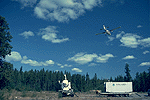
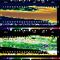

P.I.(s): Robert Banta -- NOAA/Environmental Technology Laboratory
Co-I(s): W. Eberhard, James Wilczak, Brooks Martner -- NOAA
Objectives: Mean wind and turbulence properties of the outer atmospheric boundary layer (OABL) and lower troposphere above about 100 m were measured using ground-based remote sensing instrumentation, including a UHF profiler equipped with RASS, a Doppler radar, and a Doppler lidar. The measured properties included profiles of wind, turbulence quantities, and temperature as functions of time. The radar also measured the structure of clouds overhead. The radar was located near the NSA-OJP site in 1994.
|  The NOAA Doppler Radar near NSA-OJP |  NOAA Doppler Radar Image (with comments) |
 Daily Wind ProfilesDaily Temperature ProfilesBoundary Layer HeightsSurface Met Data
Daily Wind ProfilesDaily Temperature ProfilesBoundary Layer HeightsSurface Met Data
Vertical Doppler Radar (GIF Images)Conical Scan Doppler Radar
Objectives:
The field work objective was to use ground-based remote sensors to measure mean winds, boundary layer depth, and turbulence characteristics in the outer boundary layer (> 100 m AGL) as well as the structure and kinematics of tropospheric clouds. The analysis goals are to document diurnal evolution of boundary layer conditions and to examine how motions in the outer boundary are affected by cloudiness and how they, in turn, are related to surface fluxes.
Instruments:
Kinds of Data Collected:
Operating Locations and Times:
AFM Overview || AFM-1 | AFM-2 | AFM-3 | AFM-4 | AFM-5 | AFM-6
AFM-7 | AFM-8 | AFM-9 | AFM-11 | AFM-12 | AFM-13 | AFM-14 | AFM-15
 Send a data request to the BOREAS Data Manager (BOREAS Investigators only)
Send a data request to the BOREAS Data Manager (BOREAS Investigators only)
E-Mail a comment on this page to the curator 
Send e-mail to Keith Kaminsky, the BORIS representative for the AFM group
Return to the AFM Overview
Return to the BOREAS Science Groups Overview
Return to the BOREAS Home Page
Last Updated: October 20, 1997
{kind=link}
{kind=link}